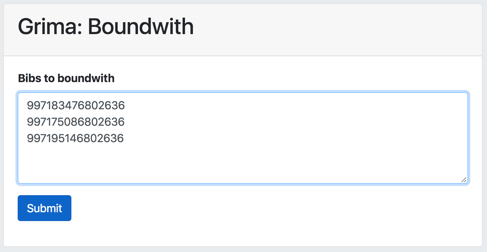
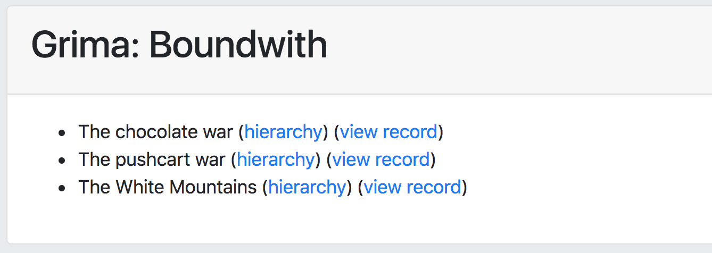
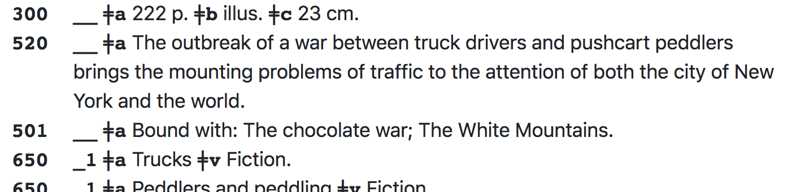

grima - whispering into alma's ear with APIs
This project is maintained by zemkat
This grima adds fields to records to indicate that multiple bibliographic entities have been bound together and should circulate as one item. These additions are:
Overnight, a job will run identifying these as related records and they will circulate as a boundwith.
Enter the list of MMS IDs for the titles to be bound together. The first one should already have its holding and item record. (the other bib records do not need inventory) 
After the grima runs, it outputs a list of the titles modified: 
Each title on the list includes links to PrintBib and Hierarchy displays so you can check out the changes: 
The Alma process will run overnight and identify them as related records, so they will function as boundwiths.